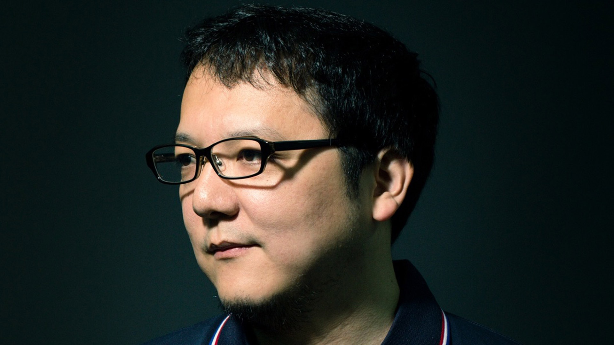
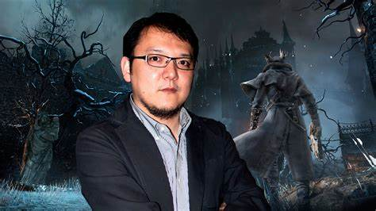

A História de Hidetaka Miyazaki
Após se formar, Hidetaka Miyazaki foi trabalhar para a Oracle Corporation, com sede nos EUA. Por recomendação de um amigo de lá, Miyazaki começou a jogar o jogo "Ico" de 2001, que o fez considerar uma mudança de carreira para um designer de jogos. Aos 29 anos, no entanto, Miyazaki descobriu que poucas empresas de jogos o empregariam por causa de sua idade, porém, uma empresa ainda pequena na época, chamada FromSoftware arriscou contratar Miyazaki. Após contratado, Miyazaki começou a trabalhar em um novo sucessor da série Armored Core.
Na época, a FromSoftware havia assinado um contrato com a Sony Interactive Entertainment para desenvolver um jogo exclusivo de Playstation 3 de nome "Demon's Souls", porém, o desenvolvimento do jogo ainda estava muito atrasado e problemático. Ao Saber sobre o que mais tarde se tornou Demon's Souls, Miyazaki ficou animado com a perspectiva do título e se ofereceu para ajudar. No fim do desenvolvimento, Miyazaki de forma sutil colocou todas suas ideias na pauta do jogo. Embora o jogo tenha sido mal vendido no início, os próprios jogadores começaram a se interesar através de recomendações. Depois de alguns meses, a FromSoftware logo encontrou editores dispostos a lançar o título fora do Japão. Demon's Souls, apesar de suas vendas e marketing fracos, possuíu uma qualidade altíssima, o que fez a equipe da FromSoftware deixar sua próxima produção nas mãos de Miyazaki. Após o lançamento e o mega sucesso dos sucessores espirituais do jogo, Dark Souls e Dark Souls II, Miyazaki foi promovido ao cargo de presidente em 2014.

Após o lançamento da "Prepare to Die Edition" de Dark Souls em agosto de 2012, a Sony Computer Entertainment abordou a FromSoftware sobre o desenvolvimento cooperativo em um novo título. Miyazaki perguntou sobre a possibilidade de desenvolver um jogo para consoles de oitava geração e o conceito de Bloodborne desenvolvido a partir daí.
Não havia história ou conexões com os títulos anteriores da FromSoftware, embora Miyazaki admitisse que ele "carrega o DNA de Demon's Souls e seu design de nível muito específico". O desenvolvimento correu paralelamente ao de Dark Souls II, que Miyazaki simplesmente supervisionou, pois ele era incapaz de dirigir ambos os títulos simultaneamente.
Após o lançamento de Bloodborne em março de 2015, Miyazaki retornou à série Souls como diretor em Dark Souls III, com a ajuda dos diretores Isamu Okano e Yui Tanimura, respectivamente. Dark Souls III foi lançado no Japão em março de 2016 e em todo o mundo em 12 de abril do mesmo ano.
Hidetaka também já trabalhou em outro jogo chamado Sekiro: Shadows Die twice que ganhou o prêmio de jogo do ano pelo The Game Awards, e há algum tempo atrás, engajou-se em uma parceria com George R.R. Martin para a criação de um novo jogo chamado "Elden Ring", o que gerou uma expectativa colossal na industria de jogos.
Hoje em dia, Miyazaki já está trabalhando em um novo projeto em parceria novamente com a Sony Interactive Entertainment.